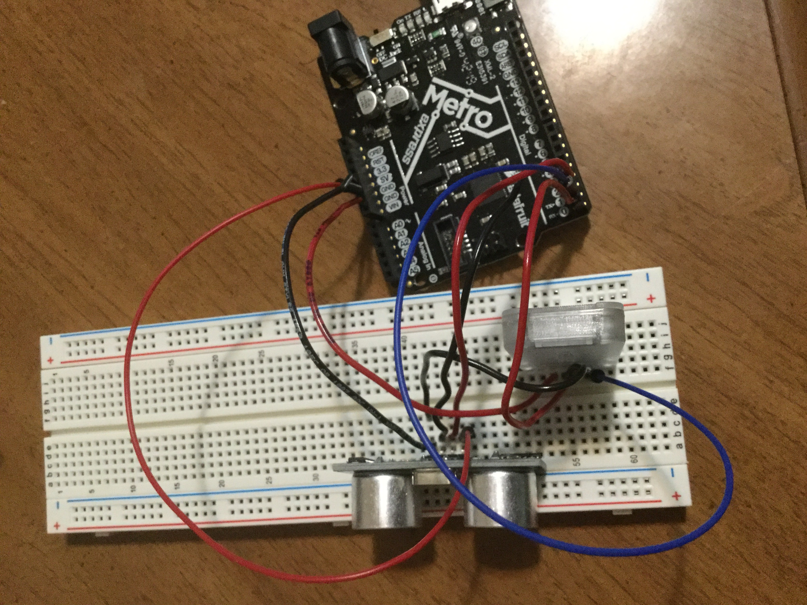

Thoughts:
For the machine building assignment, I created an app through MIT's app inventor to control my schematic through an android phone. These past two weeks, I have been exploring the MIT’s app inventor for my project and I thought I would incorporate some parts of it in a couple class assignments. However, one part of my project that was giving me a hard time is the HC- 06 bluetooth. I have been trying to get it to connect on the android phone, but had no success even after several attempts. The phone recognizes the bluetooth, but I get the following error “507 unable to connect.”
Progress:
Here is a picture of the circuit that I built. I wasn’t quite sure how to connect the 5V pin with two different wires. At first, I tried wiring both of the wires that need to connect to the 5V pin on the breadboard’s same row- that didn’t work. Then, I tried looking at the internet for help. I had no success because questions that other people had about wiring 5V pins with multiple wires was different than mine.

Here is the code that was uploaded on Arduino IDE.
const int trigPin = 3; const int echoPin = 2; long duration, cm; void setup() { // initialize serial communication with HC-06: Serial.begin(9600); pinMode(trigPin, OUTPUT); pinMode(echoPin, INPUT); } void loop() { // The sensor is triggered by a HIGH pulse of 10 or more microseconds. // Give a short LOW pulse beforehand to ensure a clean HIGH pulse: digitalWrite(trigPin, LOW); delayMicroseconds(2); digitalWrite(trigPin, HIGH); delayMicroseconds(10); digitalWrite(trigPin, LOW); // Read the signal from the sensor: a HIGH pulse whose // duration is the time (in microseconds) from the sending // of the ping to the reception of its echo off of an object. duration = pulseIn(echoPin, HIGH); // convert the time into a distance cm = (duration/2)/29.1; if(cm < 20) { Serial.print("d"); delay(400); } else { Serial.print("n"); delay(400); } }
MIT’s App Inventor Progress:
I used some of the skills that I learned from last week’s assignment to make this app. It is pretty basic, but does the job well (except the bluetooth doesn’t connect). Here is the design of the app: